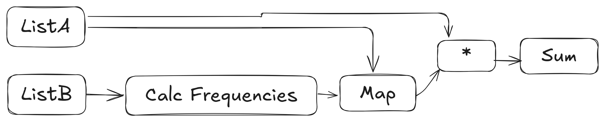

With December beginning, we are once again graced with the Advent of Code: a daily coding challenge crafted by whimsical elves. And what better way to tackle these devious puzzles than with KDB/Q? Today’s problem revolves around comparing and transforming lists. I would encourage you to check out todays full text and give it a go yourself. Spoilers Ahead.
Part 1
In Part 1, we are tasked with sorting two lists and calculating the sum of their element-wise differences. This is straightforward, there are multiple ways to solve it in KDB. Let’s walk through them.
First, we need to parse the input. A slight wrinkle is that the numbers are separated by three spaces, which means 0: won’t work out of the box. Instead, we can use vs to split each line into parts and cast them to longs. While we’re at it, we’ll use flip to transform our input into two separate lists:
q)inp:flip"J"$" "vs/:read0`:data/1
q)inp
3 4 2 1 3 3
4 3 5 3 9 3Now we need to pair up our elements from smallest to largest, for this we can use asc. Next we need to calculate the difference. There are a few ways to do this e.g. -/ or taking the last of deltas but I want to highlight a favourite. We can use apply . along with (-). You may wonder why we cant just do -. and the primary reason is that on the left we need - to act as a noun rather than a verb, by wrapping it in brackets KDB will now treat it as a noun.
q)sum abs(-). asc each inp
11Minor Diversion to QSQL
Alternatively, we can solve this problem using QSQL and tables. To do this, we need to structure our inp data as a table rather than a flipped list. Here’s how we can transform the input into a table format:
q)inptab:([]lista:`long$();listb:`long$())upsert"J"$" "vs/:read0`:data/1
q)inptab
lista listb
-----------
3 4
4 3
2 5With the data in a table, we can use a single select statement to calculate the sum of absolute differences between the sorted lists:
q)select sum abs asc[lista]-asc listb from inptab
lista
-----
11Both the table-based approach and the list-based approach are comparable in terms of performance, so it largely comes down to preference. For day-to-day tasks, I find the table-based version to be slightly more readable and intuitive, especially when working with more data.
Here’s a quick comparison of their performance:
q)\t:1000 sum abs(-). asc each inp
25
q)\t:1000 select sum abs asc[lista]-asc listb from inptab
26Part 2
In Part 2, the task changes slightly: we need to calculate the sum of the elements in list a multiplied by their frequencies in list b. Let’s start by using the table-based approach to solve this.
To determine the frequencies of elements in list b, we can use a count by query:
q)select c:count i by listb from inptab
listb| c
-----| -
3 | 3
4 | 1Now that we have the frequencies, we can perform a left join (lj) to combine them with the main table and compute the desired sum. One detail to note: we need to rename the key in the frequency table (listb) to match the lista column in the main table before joining. Here’s the full query:
q)select sum lista*c from inptab lj select c:count i by lista:listb from inptab
lista
-----
31On Using i
You may have heard that using the implicit index column i in a query is slower than selecting a column explicitly defined in the table. While this is technically true, the impact on performance in most cases (including ours) is negligible. For example:
q)\t:100000 select c:count i by listb from inptab
2512
q)\t:100000 select c:count lista by listb from inptab
2520Back To Terse Land
Let’s return to our original non-table solution and explore what’s happening to each of the lists. The transformation process can be visualized like this:

In this approach, we transform list b into a mapping of frequencies while leaving list a unchanged. Conceptually, this involves applying the identity function to list a and count each group to list b. Using the @ operator, we can pair each list with its respective transformation function:
q)(::;count each group::)@'inp
3 4 2 1 3 3
4 3 5 9!1 3 1 1For those not too familiar :: here acts as an identity function, in the first case it is just returning list a while in the second part the :: forces the chain of functions to act like a projection instead of KDB trying to execute it straight away. Another alternative would have been to do '[count each;group] however I find that syntax harder to parse. From here its fairly easy to do the rest:
q)sum{x*y x}.(::;count each group::)@'inp
31We can also use count each group in a single select statement rather than the left join in the previous solution and in fact it brings the performance more in line with list solution:
q)\t:100000 select sum lista*c from inptab lj select c:count i by lista:listb from inptab
11525
q)\t:100000 sum{x*y x}.(::;count each group::)@'inp
4352
q)\t:100000 select sum lista*(count each group listb) lista from inptab
4512With that, I’ve covered everything I tried or found interesting in today’s Advent of Code challenge. If you discovered a different approach or a unique insight, I’d love to hear about it!